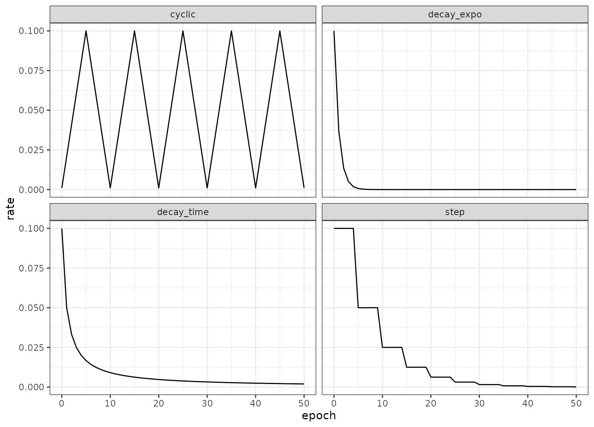

Learning rate schedulers alter the learning rate to adjust as training
proceeds. In most cases, the learning rate decreases as epochs increase.
The schedule_*() functions are individual schedulers and
set_learn_rate() is a general interface.
Usage
schedule_decay_time(epoch, initial = 0.1, decay = 1)
schedule_decay_expo(epoch, initial = 0.1, decay = 1)
schedule_step(epoch, initial = 0.1, reduction = 1/2, steps = 5)
schedule_cyclic(epoch, initial = 0.001, largest = 0.1, step_size = 5)
set_learn_rate(epoch, learn_rate, type = "none", ...)Arguments
- epoch
An integer for the number of training epochs (zero being the initial value),
- initial
A positive numeric value for the starting learning rate.
- decay
A positive numeric constant for decreasing the rate (see Details below).
- reduction
A positive numeric constant stating the proportional decrease in the learning rate occurring at every
stepsepochs.- steps
The number of epochs before the learning rate changes.
- largest
The maximum learning rate in the cycle.
- step_size
The half-length of a cycle.
- learn_rate
A constant learning rate (when no scheduler is used),
- type
A single character value for the type of scheduler. Possible values are: "decay_time", "decay_expo", "none", "cyclic", and "step".
- ...
Arguments to pass to the individual scheduler functions (e.g.
reduction).
Details
The details for how the schedulers change the rates:
schedule_decay_time(): \(rate(epoch) = initial/(1 + decay \times epoch)\)schedule_decay_expo(): \(rate(epoch) = initial\exp(-decay \times epoch)\)schedule_step(): \(rate(epoch) = initial \times reduction^{floor(epoch / steps)}\)schedule_cyclic(): \(cycle = floor( 1 + (epoch / 2 / step size) )\), \(x = abs( ( epoch / step size ) - ( 2 * cycle) + 1 )\), and \(rate(epoch) = initial + ( largest - initial ) * \max( 0, 1 - x)\)
Examples
library(ggplot2)
library(dplyr)
library(purrr)
iters <- 0:50
bind_rows(
tibble(epoch = iters, rate = map_dbl(iters, schedule_decay_time), type = "decay_time"),
tibble(epoch = iters, rate = map_dbl(iters, schedule_decay_expo), type = "decay_expo"),
tibble(epoch = iters, rate = map_dbl(iters, schedule_step), type = "step"),
tibble(epoch = iters, rate = map_dbl(iters, schedule_cyclic), type = "cyclic")
) %>%
ggplot(aes(epoch, rate)) +
geom_line() +
facet_wrap(~ type)

# ------------------------------------------------------------------------------
# Use with neural network